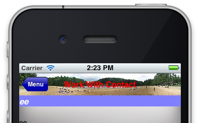
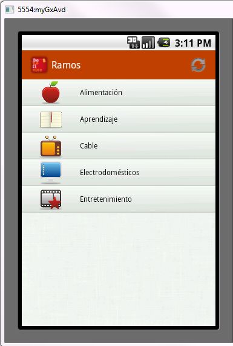

Customize the look & feel of the top bar of the application.
The Class of an Application Bar can be changed at runtime using the Class property of the Application Bar Control.
- Background Color - Sets a color for the background of the Bar.
- On iOS 7, the background color has transparency by default. If you want no transparency, you need to set the background color with alpha = 0.
- Background Image - Sets an image for the background of the Bar. See sample
- Status Bar Color - Sets a color for the background of the Status Bar.
- On Android 5 or greater, you can set the color for the status bar. The guidelines of Material Design indicates that "toolbars and larger color blocks should use the primary 500 color, which should be the main color of your app. The status bar should be the darker 700 tint of your primary color".
- On IOS this property is not taken into account.
- Title Image - Sets an image to show instead of the title
- Icon - Sets an image of the icon shown at the left of the title (only Android). For newer Android versions is not recommended its usage (see Notes section for details).
- Forecolor - Sets a color for the title (if title image is not set)
- Font - Sets fonts properties for the title (if title image is not set)
- Default Button Class - Class of type button that will be used for the buttons on the Application Bar
- Back Button Class - Button class type that will be used for the back button
- Back Button Image - Image that will be shown where the back button appears
- Back Button Text - Text that will be shown where the back button appears (Only Apple)


Default 48 dip
Large portrait 48 dip
Large portrait mdpi 56 dip
Large landscape 40 dip
XLarge 56 dip
For more information click here.
The hight is 44 dip, except in iPhone landscape that is 32 dip.
In retina screens are double pixels, 88 and 64 respectively.
For more information, click here.
- For the "Default Button Class" only the properties "Font Size" and "Forecolor" of the selected button class are taken.
- Back Button Image is available for Android as of GeneXus 17 upgrade 4.
- On iOS, the text color of the search box icon for the grid control adopts the Forecolor when is set at design-time.
If the grid is on the top of the panel, it also adopts the background color, checking if the forecolor is dark (in another case, it'll be set as it).
Otherwise (the grid has other controls above it), it only adopts a minimalist light aspect, without a background color. In this scenario, if the forecolor of the Application Bar class is light, It'll adopt it, without checking if it is light or not. Maybe is desirable to preserve the light title on the application bar, and to avoid the described behavior on the search box text it is recommended to design two Application Bar classes; one for the text of the search box set at design-time, and another one for the title of the application bar set at run-time through the ClientStart event. This action will force to adopt independent Theme Classes for the default search box control and the application bar.
On Android, the text color of the search box depends on Base Color Scheme property value.
- The usage of an icon on the application bar for Android apps is not recommended due to the introduction of Material Design guidlines. The developer guidelines explicitly say:
"In modern Android UIs developers should learn more on a visually distinct color scheme for toolbars than on their application icon. The use of application icon plus title as a standard layout is discouraged on API 21 devices and newer."